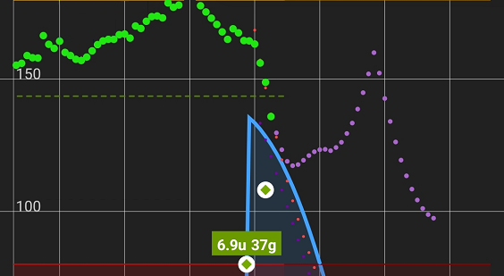

Predictive Simulation

Settings
 Predictive Simulations
Predictive Simulations
xDrip+ Predictive Simulation settings is an experimental, non medically approved feature. Make sure to re-read the EULA before enabling it. Do not use them to take medical decisions.
Warning
If you use a closed-loop system do not rely on these predictions since they don't take into account basal modulation.
Predictive simulations
Display mathematical simulations based on profile data and carbs/insulin logs
Enabling predictions will add the light purple prediction curve on the main graph. This curve is showing you how your BG should theoretically evolve using current insulin and carbs entered in xDrip+. More details on display here.

xDrip+ can handle multiple insulin types. See below.
Multiple Insulin Types
Options for working with multiple insulin types
Carb ratio and insulin sensitivity⌁
Automatic import
If you use accepting treatments from AAPS or NSClient, these parameters and the basal profile will automatically import at profile switch.
Carb absorbtion rate⌁
These parameters are key to diabetes management and should be known.
They will most probably vary during the day and should be calculated for every meal and also outside meal times.
Everybody has his own parameters. Don't use other people's parameters.
Carb ratio is the amount of carbohydrates that will be covered by 1 unit of insulin.
For example 10 means each 10g of carbohydrates will require 1 unit of insulin.
Carb Ratio
Grams of carbohydrates 1 Unit covers
Insulin sensitivity is the resulting blood glucose drop for one unit of insulin, with no carbohydrates in the blood stream.
For example 50 (or 2.8) means 1 unit drops BG of 50 mg/dl (or 2.8 mmol/l).
Insulin Sensitivity
Glucose drop for 1 Unit
Carbohydrates absorption rate is the speed at which your body will assimilate carbohydrates. See here how to calculate that parameter.
Carb absorption rate
Linear model carbs absorbed by hour
Touching one of the two menus above will open the treatment profile editor.

You can define carbs per units of insulin and correction factor, just remember to validate the entry and not jump from one line to another without confirming an entry. Save when finished.

You will create blocks of for different hours during the day.
To create (split) or delete a block, long touch the upper area of the block.
Touching the time bar at the top of a block allows you to change it, it also will propagate to the block below.
Eventually you'll end up having something like this.

If necessary you can perform a global percentage modification of all parameters with the slide at the bottom.
Remember to save.
Basal Profile Editor⌁
This feature is under development.
Current basal profile is automatically imported from NSClient when Accept Treatments is enabled.
Basal Profile Editor
Graphical editor for pump basal profiles
You can display and edit your basal profile.
- Select the profile you want to modify or view
- Export (not functional yet)
- Save locally

To edit your basal profile:
- Touch the basal hour bar you want to modify, it will turn orange
- Change the step if necessary
- Use the positive numbered box or the upwards arrow to increase
- Use the negative numbered box or the downwards arrow to decrease
- Use set, or double tap the bar to set the new value

Use trend momentum⌁
Trend momentum is independent from predictions, it is just a mathematical extrapolation (i.e. if BG continues to evolve with his trend, not considering insulin and carbs, where will it go?) of your current BG trend (up/down/flat). It can be used for Forecasted Low alarms.
Trend momentum can be integrated in predictions (recommended).
Use trend momentum
Calculate including glucose trend
Including current trend (1) can prevent sharp prediction variations and might be closer to real evolution (2).
Might
EULA⌁
Review the EULA before using this feature.
End User License Agreement
Not for medical use - research only
Low Level prediction⌁
You can setup more prediction parameters here.
Low level prediction values
Deep settings for algorithms
Target is used for bolus wizard calculator. This is the desired BG target.
Insulin duration depends on your insuline type. Changing the value requires xDrip+ restart (or phone restart).
Target glucose value is the value used to calculate suggested corrections.
Target glucose value
99 / 5.5
Insulin duration is a parameter you should discuss with your endocrinologist. When using closed loop systems, this value will be much more. Still, remember that xDrip+ predictions find their best use with multiple daily injections, not with pumps.
Insulin duration in hours
3
Liver parameters were introduced to take into account liver glycogen reaction to lows but are not characterizable easily and should be left at default values.
Default liver sensitivity ratio
2
Default liver maximum impact (0 to 1)
0.8
Multiple insulin types⌁
Multiple insulin types
Select the insulin types you are using.
You can select up to three insulin types and then decide which one is used basal and which for bolus.
Treatment profile editor
Enable at least one, max three profiles.
☐ FIASP (ultra-fast acting)
☐ Afrezza (ultra-fast acting)
☐ Apidra (ultra-fast acting)
☐ Novorapid (fast acting)
☐ Humalog (fast acting)
☐ Lispro (fast acting)
☐ Actrapid (short acting)
☐ Insulatard (NPH)
☐ Toujeo (long acting)
☐ Lantus (long acting)
☐ Levemir (long acting)
☐ Basaglar (long acting)
☐ Tresiba (ultra-long acting)
In the lower part of the dialog, select which insulin will be used for basal (long acting) and bolus (fast acting):
Choose basal insulin profile
Choose bolus insulin profile. Also used for pump and pen...
Once done, save your choices.
CANCEL RESET SAVE
When adding multiple insulin type, using treatments will ask you to select the one you're using for this treatment.

You can add basal insulin on the display and integrate it in calculation.
Not recommended as basal insulin in MDI is only used to keep background BG constant.
Use notes to track basal injections.
Multiple insulin types will be displayed in an identical way on the main graph.
Use Basal Activity
Plot basal activity on graph and incorporate in predictive model.